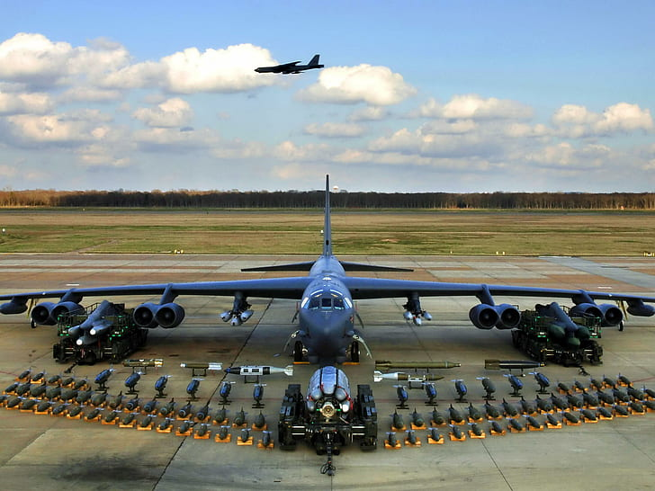

Bomber aircraft are known for doing exactly what their name suggests, bombing targets using large amounts of munitions or very accurate small munitions. There are 2 types of bombers, strategic bombers and tactical bombers, strategic bombers have a tendanct to be larger and they carry more bombs, their targets are usually predetermined and given to them hours or days prior, tactical bombers bring bombs down on targets, on demand which means that they have to respond to the dynamic battle conditions and respond appporiately, they also happen to have some of the longest history as the first planes used in an offensive duty did not use ballistic weapons, rather they attacked by droping hand grenades out of the cockpit and into enemy trenches and positions.